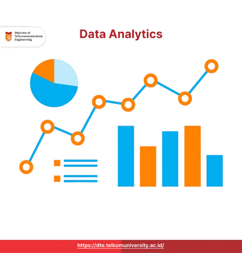
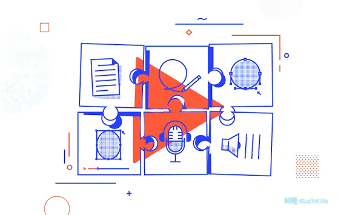

Proyek 1
Dashboard Data Visualization
Proyek ini menampilkan data operasional dalam bentuk grafik interaktif.

Proyek 2
Cargo Capacity Analysis Report
Laporan analisis kapasitas kargo untuk pengambilan keputusan operasional.

Proyek 3
Workflow Automation Script
Script otomatisasi untuk mengurangi pekerjaan repetitif.